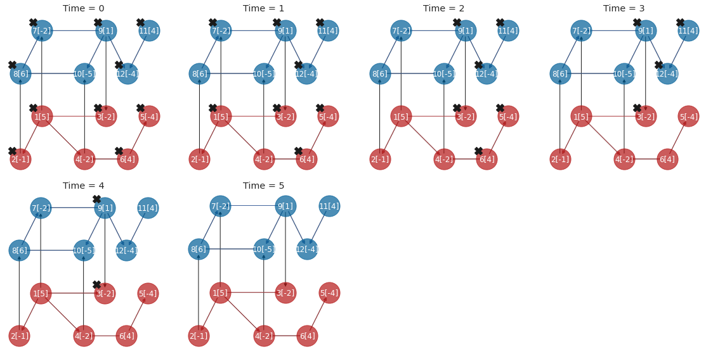
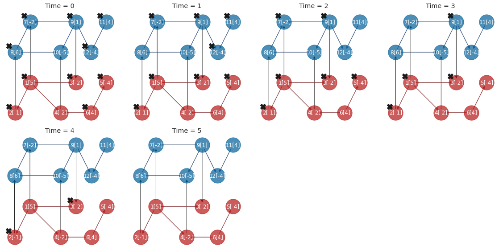
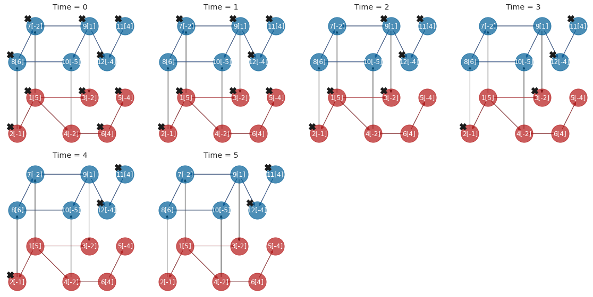
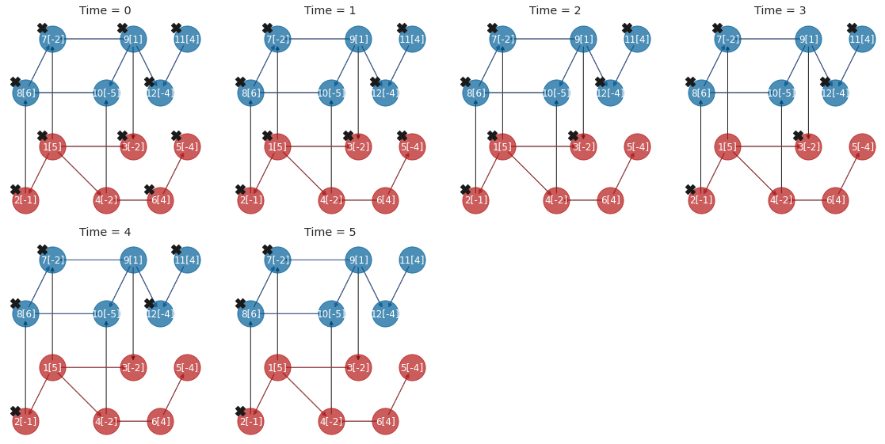
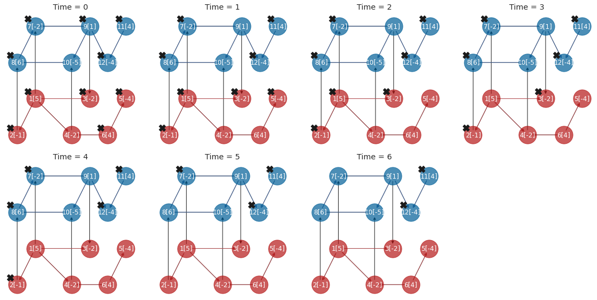
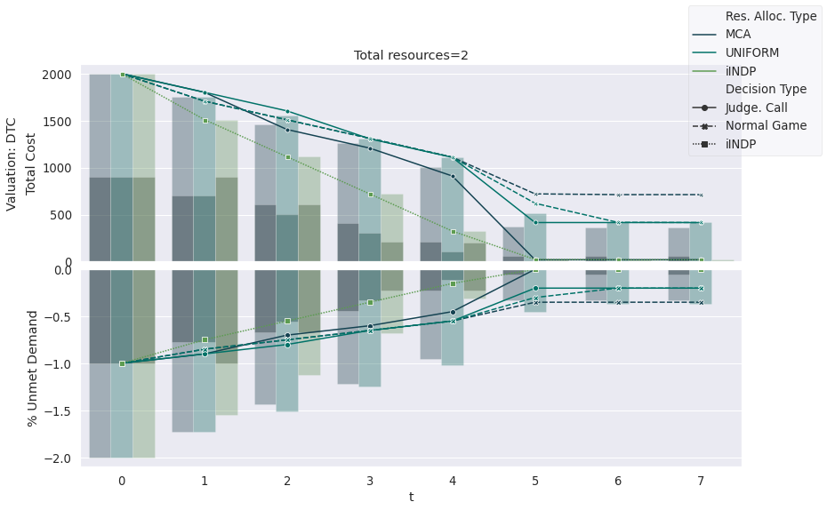
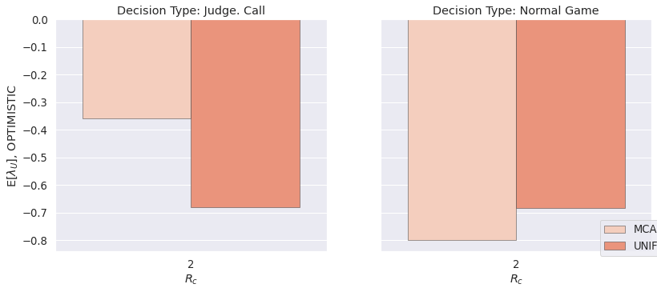
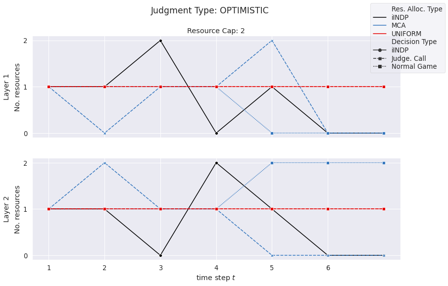
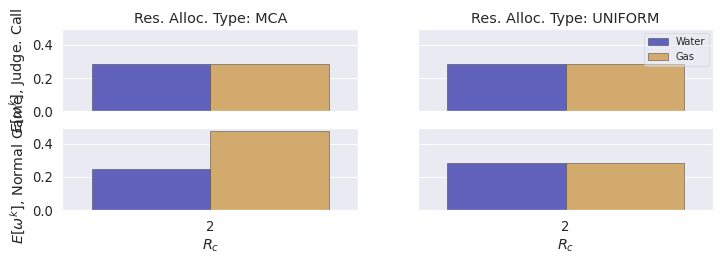

Interdepndent Network Restoration Decision-making (toy example)¶
This notebook finds restoration plans for a toy disrupted interdependent network using various methods, including Interdependent Network Design Problem (INDP), Judgment Call (JC) method with and without Auction-based resource allocations, and Interdependent Network Restoration Simultaneous Games (INRSG) and Bayesian Games (INRBG). The performance of the restoration plans is compared using relative performance measures as well as resource allocation gaps.
[1]:
import run_main
import dindputils
import plots
import itertools
Can't change the Current Working Directory
[2]:
# Set parameters
layers=[1,2]
auction_type = ["MCA", "UNIFORM"]#, "MAA", "MDA"
valuation_type = ["DTC"]
judge_types = ["OPTIMISTIC"]#"PESSIMISTIC",
[3]:
# Run methods
run_main.run_indp_sample(layers)
run_main.run_jc_sample(layers, judge_types, auction_type, valuation_type)
run_main.run_game_sample(layers, judge_types, auction_type, valuation_type)
--Running INDP (T=1) or iterative INDP.
Num iters= 7
--------------------------------------------
Warning: your license will expire in 11 days
--------------------------------------------
Using license file /home/hesam/gurobi.lic
Academic license - for non-commercial use only
-Time Step (iINDP) 1 / 7
-Time Step (iINDP) 2 / 7
-Time Step (iINDP) 3 / 7
-Time Step (iINDP) 4 / 7
-Time Step (iINDP) 5 / 7
-Time Step (iINDP) 6 / 7
-Time Step (iINDP) 7 / 7
Plot restoration plan by INDP
findfont: Font family ['CMU Serif'] not found. Falling back to DejaVu Sans.

--Running JC: OPTIMISTIC, resource allocation: AUCTION
auction type: MCA, valuation: DTC
-Time Step (JC) 1 / 7
-Time Step (JC) 2 / 7
-Time Step (JC) 3 / 7
-Time Step (JC) 4 / 7
-Time Step (JC) 5 / 7
-Time Step (JC) 6 / 7
-Time Step (JC) 7 / 7
--Running JC: OPTIMISTIC, resource allocation: UNIFORM
-Time Step (JC) 1 / 7
-Time Step (JC) 2 / 7
-Time Step (JC) 3 / 7
-Time Step (JC) 4 / 7
-Time Step (JC) 5 / 7
-Time Step (JC) 6 / 7
-Time Step (JC) 7 / 7
Plot restoration plan by JC OPTIMISTIC MCA DTC

Plot restoration plan by JC OPTIMISTIC UNIFORM DTC

--Running Game: NORMALGAME, resource allocation: AUCTION
auction type: MCA, valuation: DTC
-Time Step 1 / 7
-Time Step 2 / 7
-Time Step 3 / 7
-Time Step 4 / 7
-Time Step 5 / 7
-Time Step 6 / 7
-Time Step 7 / 7
--Running Game: NORMALGAME, resource allocation: UNIFORM
-Time Step 1 / 7
-Time Step 2 / 7
-Time Step 3 / 7
-Time Step 4 / 7
-Time Step 5 / 7
-Time Step 6 / 7
-Time Step 7 / 7
Plot restoration plan by Game OPTIMISTIC MCA DTC

Plot restoration plan by Game OPTIMISTIC UNIFORM DTC

[4]:
# Read results
COMBS = []
OPTIMAL_COMBS = [[0, 0, len(layers), len(layers), 'indp_sample_12Node', 'nan',
'nan', 'nan', '']]
for jt, rst, vt in itertools.product(judge_types, auction_type, valuation_type):
if rst == 'UNIFORM':
COMBS.append([0, 0, len(layers), len(layers), 'jc_sample_12Node', jt, rst, 'nan', 'real'])
COMBS.append([0, 0, len(layers), len(layers), 'ng_sample_12Node', jt, rst, 'nan', ''])
else:
COMBS.append([0, 0, len(layers), len(layers), 'jc_sample_12Node', jt, rst, vt, 'real'])
COMBS.append([0, 0, len(layers), len(layers), 'ng_sample_12Node', jt, rst, vt, ''])
BASE_DF, objs = dindputils.read_results(COMBS, OPTIMAL_COMBS, ['Total'],
root_result_dir='../results/', deaggregate=True)
LAMBDA_DF = dindputils.relative_performance(BASE_DF, COMBS, OPTIMAL_COMBS,
ref_method='indp_sample_12Node', cost_type='Total')
RES_ALLOC_DF, ALLOC_GAP_DF = dindputils.read_resourcec_allocation(BASE_DF, COMBS, OPTIMAL_COMBS,
objs, root_result_dir='../results/',
ref_method='indp_sample_12Node')
Aggregating Results
[####################] 100.0%
Ref area calculation
[####################] 100.0%
Lambda calculation
[####################] 100.0%
Resource allocation
[####################] 100.0%
Allocation Gap
[####################] 100.0%
[5]:
# Plot results
plots.plot_performance_curves(BASE_DF, cost_type='Total', ci=None,
deaggregate=True, plot_resilience=True)
plots.plot_relative_performance(LAMBDA_DF, lambda_type='U')
plots.plot_auction_allocation(RES_ALLOC_DF, ci=None)
plots.plot_relative_allocation(ALLOC_GAP_DF, distance_type='gap')



